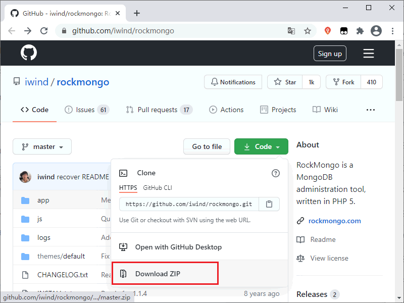
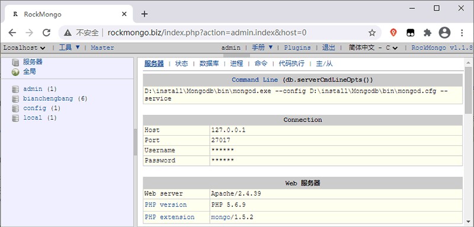
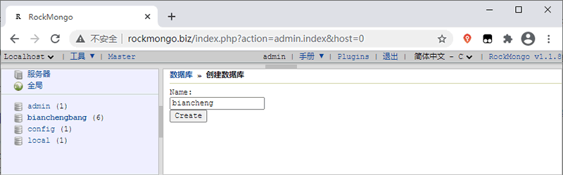
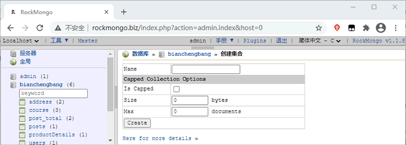
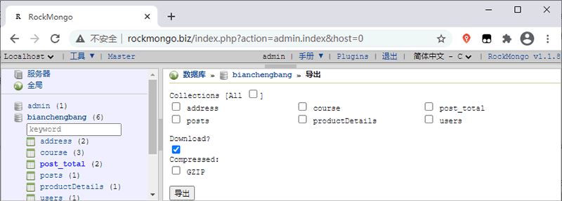
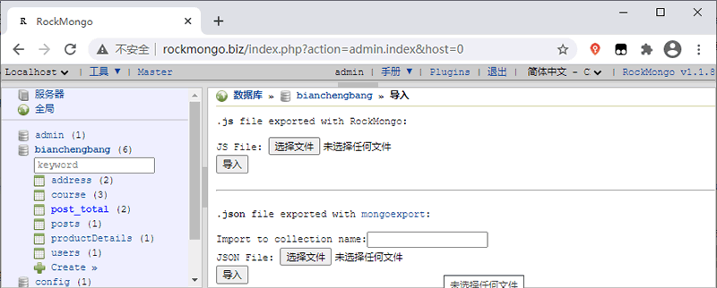

MongoDB管理工具RockMongo
RockMongo 是一个 MongoDB 管理工具，您可以使用它来管理 MongoDB 服务、数据库、集合、文档、索引等等。它为阅读、编写和创建文档提供了一种非常友好的方式，类似于使用 PHP 开发的 MySQL 管理工具 PHPMyAdmin。
Web服务器准备好后，解压上面下载好的 RockMongo 压缩文件，然后将其移动到 Web服务器的根目录。以 phpStudy 为例，它的根目录在其安装目录下的 www 目录中。
最后配置好需要的访问参数后，我们就可以通过访问 rockmongo 目录中的 index.php 文件来访问 RockMongo 了，RockMongo 默认的用户名是 admin，密码也是 admin，如下图所示：
下面来介绍一下 RockMongo 的基本操作。
您可以在浏览器的左侧面板中看到新创建的数据库。
在新打开的页面中输入要创建的集合名称，然后单击“Create”按钮即可完成集合的创建。注意，关于 Is Capped、Size、Max 等参数如非必要可以不用设置。
您需要提供 JSON 或者数组类型的文档数据，然后单击“Save”按钮即可创建文档。
当我们选择导出选项时，会在页面中展示出数据库中的所有集合，选择要导出数据的集合然后单击“导出”按钮即可导出集合中的数据。默认情况下 RockMongo 会将集合中的数据保存在 js 格式的文件中。
在导入数据时也需要将数据保存到 js 格式的文件中，然后将 js 文件上传到服务器，上传成功后单击“导入”按钮即可。
下载 RockMongo
您可以从 https://gitee.com/mirrors/rockmongo 或 https://github.com/iwind/rockmongo 下载最新版的 RockMongo，如下图所示：

图：下载 RockMongo
图：下载 RockMongo
安装 RockMongo
RockMongo 下载完成后，您还需要一个能够运行 PHP 的 Web服务器，您可以使用 phpStudy、WampServer 等集成开发环境来搭建 Web服务器。另外，Web服务器需要能够运行 5.1.6 或更高版本 PHP，并且需要支持 SESSION。为了能够顺利连接 MongoDB，您还需要在 PHP 中安装 php_mongo 扩展，关于扩展安装的详细信息您可以阅读《在PHP中使用MongoDB》一节。Web服务器准备好后，解压上面下载好的 RockMongo 压缩文件，然后将其移动到 Web服务器的根目录。以 phpStudy 为例，它的根目录在其安装目录下的 www 目录中。
最后配置好需要的访问参数后，我们就可以通过访问 rockmongo 目录中的 index.php 文件来访问 RockMongo 了，RockMongo 默认的用户名是 admin，密码也是 admin，如下图所示：

图：访问 RockMongo
图：访问 RockMongo
下面来介绍一下 RockMongo 的基本操作。
创建数据库
要创建一个新的数据库，可以先单击“数据库”选项卡，在打开的页面中找到“创建数据库”选项并单击。这时浏览器会打开一个新的页面，您只需要输入要创建的数据库名称，然后单击“Create”即可完成创建指定的数据库。

图：创建数据库
图：创建数据库
您可以在浏览器的左侧面板中看到新创建的数据库。
创建集合
要在数据库中创建新集合，首先需要在左侧的数据库列表中找到要创建集合的数据库并单击，然后在右侧的页面中找到“创建集合”选项并单击。在新打开的页面中输入要创建的集合名称，然后单击“Create”按钮即可完成集合的创建。注意，关于 Is Capped、Size、Max 等参数如非必要可以不用设置。

图：创建集合
图：创建集合
创建文档
要创建文档，首先需要在页面左侧的列表中找到要创建文档的集合，当您单击这个集合时，会在页面右侧显示集合中的所有文档。要创建新的文档只需要单击“插入”选项即可。您需要提供 JSON 或者数组类型的文档数据，然后单击“Save”按钮即可创建文档。
导出/导入数据
要导入/导出任何数据库或集合中的数据，首先需要单击该数据库或集合，然后在页面中找到相应的导入/导出选项并单击。当我们选择导出选项时，会在页面中展示出数据库中的所有集合，选择要导出数据的集合然后单击“导出”按钮即可导出集合中的数据。默认情况下 RockMongo 会将集合中的数据保存在 js 格式的文件中。

图：导出数据
图：导出数据
在导入数据时也需要将数据保存到 js 格式的文件中，然后将 js 文件上传到服务器，上传成功后单击“导入”按钮即可。

图：导入数据
图：导入数据
提示：在导入数据时，除了可以上传 js 格式的文件外，还可以上传 json 格式的文件。
关注公众号「站长严长生」，在手机上阅读所有教程，随时随地都能学习。内含一款搜索神器，免费下载全网书籍和视频。

微信扫码关注公众号